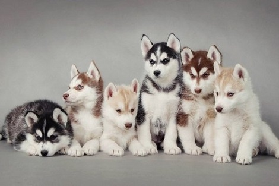
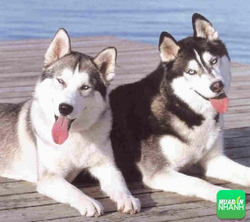
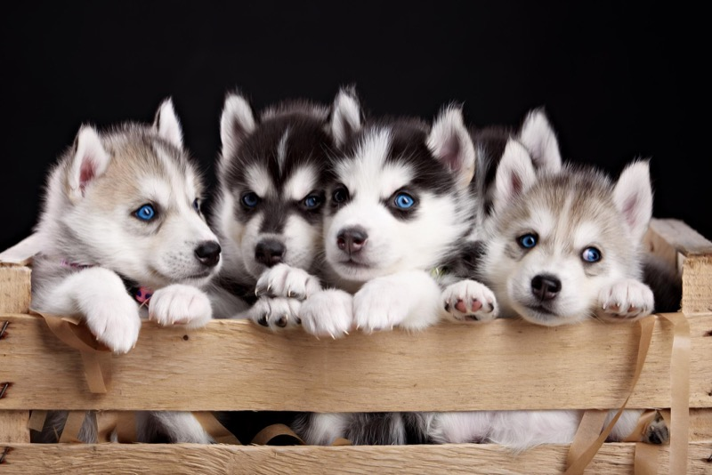

-Chó Husky(chó tuyết kéo xe) có xuất xứ từ Siberia – Nga, rất giống cho sói.
-Được con người lai tạo lần đầu tiên để kéo xe tuyết chở hàng hóa khắp Siberia.
-Thân hình những chú chó Husky cân đối, dáng vẻ dũng mãnh và đặc biệt cực kỳ dẻo dai.
-Bộ lông của chúng rất dày có 2 lớp giúp giữ ấm cơ thể rất tốt, nhưng cũng chính lớp lông này khiến chúng khó thích nghi khi được nuôi trong thời tiết nắng nóng.

-Ngày nay, chó Husky gần như không dùng để kéo xe mà thường được nuôi làm thú cưng trong nhà.
-Với bộ lông đẹp, khuôn mặt ngộ nghĩnh, dáng vẻ thần tuấn nên tại Việt Nam giá của một chú chó Husky có giá khoảng từ 6-10 triệu.
